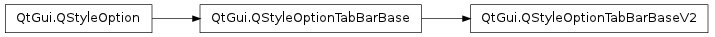

QStyleOptionTabBarBaseV2 ¶

Detailed Description ¶
The PySide.QtGui.QStyleOptionTabBarBaseV2 class is used to describe the base of a tab bar, i.e. the part that the tab bar usually overlaps with.
PySide.QtGui.QStyleOptionTabBarBase contains all the information that PySide.QtGui.QStyle functions need to draw the tab bar base.
For performance reasons, the access to the member variables is direct (i.e., using the . or -> operator). This low-level feel makes the structures straightforward to use and emphasizes that these are simply parameters used by the style functions.
For an example demonstrating how style options can be used, see the Styles example.
- class PySide.QtGui. QStyleOptionTabBarBaseV2 ¶
- class PySide.QtGui. QStyleOptionTabBarBaseV2 ( other )
- class PySide.QtGui. QStyleOptionTabBarBaseV2 ( other )
- class PySide.QtGui. QStyleOptionTabBarBaseV2 ( version )
-
Parameters: - version – PySide.QtCore.int
- other – PySide.QtGui.QStyleOptionTabBarBase
Construct a PySide.QtGui.QStyleOptionTabBarBaseV2 , initializing the members vaiables to their default values.
Constructs a copy of other .
Constructs a copy of other .
- PySide.QtGui.QStyleOptionTabBarBaseV2. StyleOptionVersion ¶
-
This enum is used to hold information about the version of the style option, and is defined for each PySide.QtGui.QStyleOption subclass.
Constant Description QStyleOptionTabBarBaseV2.Version 2 The version is used by PySide.QtGui.QStyleOption subclasses to implement extensions without breaking compatibility. If you use qstyleoption_cast() , you normally do not need to check it.
See also
QStyleOptionTabBarBase.StyleOptionType
- PySide.QtGui.QStyleOptionTabBarBaseV2. documentMode ¶